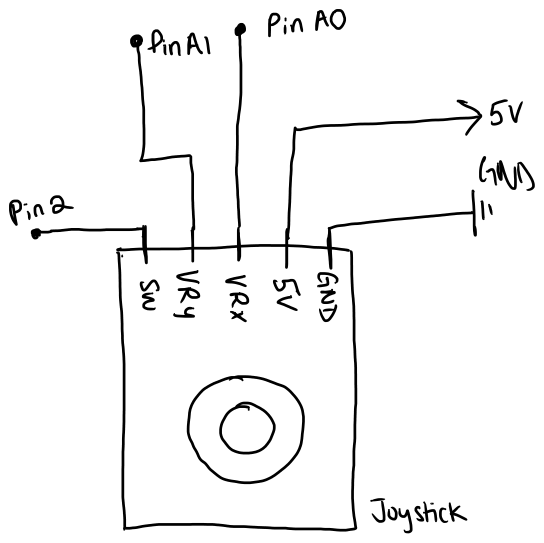
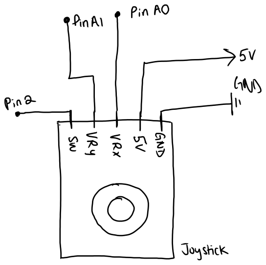
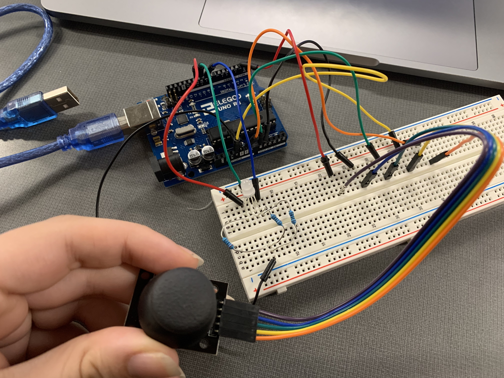
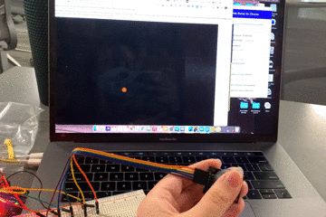
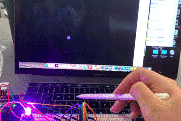
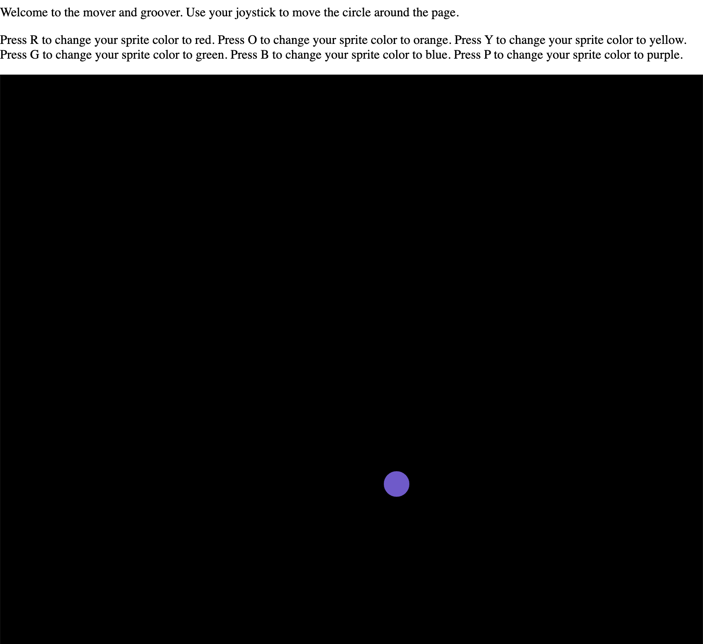
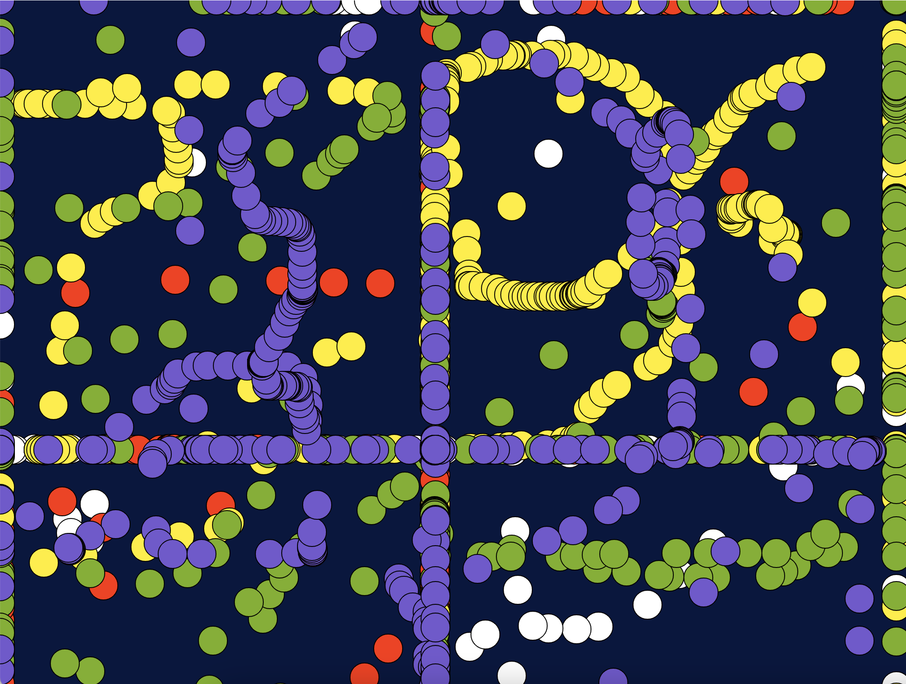

Anna's Assignment 6, : Talking to the Web!

For this assignment, I had to use 2 inputs to control something on the web using P5.js. The page had to be interactive and send signals back to the arduino for some type of output. I used a joystick to move something on the screen around, and when the user presses keys the object changes colors and changes the colors of the RGB LED.
Schematic
 

Shown on the schematic are 3 pins on the Arduino with an LED and resistor attached to each of them, which are also connected to ground. These pins are outputs and are 11, 10, and 9. The three LEDs are a representation of the RGB LED. The red, blue, and green portions of the RGB LED are connected to pin 11, 10, and 9, respectively. This RGB LED portion of the schematic functions the same as the one in the Fade Project from earlier in the quarter.
Also shown on the schematic is a joystick connected to 5 pins, including pins A0, A1, 2, 5V, and GND. Pin GND is connected to the GND line on the joystick. Pin 5V (power) is connected to the 5V line on the joystick. Pin A0 is connected to the VRx line of the joystick, which returns information about the x coordinate of the joystick input.. Pin A1 is connected to the VRy line of the joystick, which returns information about the y coordinate of the joystick input. Pin 2 is connected to the SW line of the joystick, which sends signals regarding the button aspect of the joystick
The schematic also shows the values of the resistors, which I determined by using V=IR and using the resistors I had that matched closest. For the red portion of the RGB LED, as their voltage drop is 1.8V, the voltage that is being supplied is 5V, and the target current for LEDs is 20 mA, the resistor needed to reach that target current have to have a resistance of 160 ohms. As I only had 100 and 220 ohm resistors, I opted for 220 ohms as 100ohms would exceed the recommended current maximum of 30mA. Using V=IR, the current is then 14.5 mA. For the blue and green portions of the RGB LED, as their voltage drop is 3.2V, the resistance needed for 20 mA is 90 ohms. I opted to use an 100 ohm resistor for this one as I wanted the brightness of the LEDs to all be close to the same, and 220 ohms would have made the blue significantly dimmer. The calculated current in this case is 17mA.
Code Snippets
Arduino
int VRx = A0; // initializes the variable "VRx" to represent the A0 pin. int VRy = A1; // initializes the variable "VRy" to represent the A1 pin int red = 11; // initializes the variable "red" to represent the 11 pin int green = 10; // initializes the variable "green" to represent the 10 pin int blue = 9; // initializes the variable "blue" to represent the 9 pin int redVal = 255; //initializes the variable "redVal" to be the value of the R in RGB, and starts at 255 int greenVal = 255; //initializes the variable "greenVal" to be the value of the G in RGB, and starts at 255 int blueVal = 255; //initializes the variable "blueVal" to be the value of the B in RGB, and starts at 255 void setup() { // method that sets up the arduino, ran once. Serial.begin(9600); // sets up the serial to running at 9600 Serial.setTimeout(10); // sets the serial to have a timeout so that it does not run indefinitely pinMode(red, OUTPUT); //sets pin red to be an outputting pin pinMode(green, OUTPUT); //sets pin green to be an outputting pin pinMode(blue, OUTPUT); //sets pin blue to be an outputting pin pinMode(VRx, INPUT); //sets pin VRx to be an inputting pin pinMode(VRy, INPUT); //sets pin VRy to be an inputting pin } void loop() { // method that runs main code continously repeating. // this part of the code, that sets up the values of the joystick to be in a format readable by JSON parsing, // was borrowed and altered from class lecture content. int s1 = analogRead(VRx); // assigns the value of what is read on the VRx pin to variable "s1" int s2 = analogRead(VRy); // assigns the value of what is read on the VRy pin to variable "s1" Serial.print("["); // prints "[" to serial Serial.print(s1); // prints s1 to serial Serial.print(","); // prints "," to serial Serial.print(s2); // prints s2 to serial Serial.println("]"); // prints "]" to serial and makes a new line analogWrite(red, redVal); // sets the value of R in the RGB LED to redVal analogWrite(green, greenVal); // sets the value of G in the RGB LED to redVal analogWrite(blue, blueVal); // sets the value of B in the RGB LED to redVal if (Serial.available() > 0) { // if there's serial data available to read char inByte = Serial.read(); // read serial data and assign it to inByte char if (inByte == 'r'){ // if inByte is 'r' // set color of RGB to red redVal = 255; // set redVal to 255 greenVal = 0; // set greenVal to 0 blueVal = 0; // set blueVal to 0 } else if (inByte == 'o'){ // if inByte is 'o' // set color of RGB to orange redVal = 255; // set redVal to 255 greenVal = 64; // set greenVal to 64 blueVal = 0; // set blueVal to 0 } else if (inByte == 'y'){ // if inByte is 'y' // set color of RGB to yellow redVal = 255; // set redVal to 255 greenVal = 255; // set greenVal to 255 blueVal = 0; // set blueVal to 0 } else if (inByte == 'g'){ // if inByte is 'g' // set color of RGB to green redVal = 0; // set redVal to 0 greenVal = 255; // set greenVal to 255 blueVal = 0; // set blueVal to 0 } else if (inByte == 'b'){ // if inByte is 'b' // set color of RGB to blue redVal = 0; // set redVal to 0 greenVal = 0; // set greenVal to 0 blueVal = 255; // set blueVal to 255 } else if (inByte == 'p'){ // if inByte is 'p' // set color of RGB to purple redVal = 255; // set redVal to 255 greenVal = 0; // set greenVal to 0 blueVal = 255; // set blueVal to 255 } } delay(10); // wait 10 ms }
Prior to the set up method 8 variables are initialized. This includes the VRx, VRy, red, green, and blue variables, representing their respective pins attached to them. There are also the redVal, greenVal, and blueVal variables that keep track of the RGB color codes.
My code includes a setup method which runs once and prepares the pins on the Arduino for use by designating them as outputs/inputs, and begins the serial monitor.
The loop method begings by assigning the values of analogRead(VRx) and analogRead(VRy) to the variables s1 and s2 respectively. This represents the x and y position of the joystick. Then these values are formatted for serial to be sent over to P5. Then the analogWrite method writes the red, green, and blue pins to redVal, greenVal, and blueVal respectively. Following this, the code checks if serial is available to read, and if it is, it will check what the char it picks up from serial is. Depending on the char, it will reassign the redVal, greenVal, and BlueVal to different color codes. It will then delay for 10 ms.
AnalogRead(VRx) and AnalogRead(VRy) will be getting values between 0 and 1023 depending on the position of the joystick.
p5.js
//Assignment 6 p5 var serial; // initializes the serialport object instance var portName = '/dev/tty.usbmodem14301' //initializes variable "portName" to be the name of the port connected to my arduino var xPos; //initializes variable "xPos" to record the xpos of the joystick var yPos; //initializes variable "yPos" to record the xpos of the joystick var dataarray = []; //initializes the array "dataarray" that will keep track of data coming over from serial. var green = 255; //initializes variable "green" to start at 255 var red = 255; //initializes variable "red" to start at 255 var blue = 255; //initializes variable "blue" to start at 255 //** below code is borrowed and altered from class lecture. function setup() { serial = new p5.SerialPort(); // creates a new instance of the serialport serial.on('list', printList); // set a callback function for the serialport list event serial.on('connected', serverConnected); // callback for connecting to the server serial.on('open', portOpen); // callback for the port opening serial.on('data', serialEvent); // callback for when new data arrives serial.on('error', serialError); // callback for errors serial.on('close', portClose); // callback for the port closing serial.list(); // list the serial ports serial.open(portName); // open a serial port createCanvas(1200, 800); // creates a canvas element with dimensions 1200 x 800 background(0x08, 0x16, 0x40); // sets background color to the color associated with 0x08, 0x16, 0x40. } function printList(portList) { //printst the list of serial ports // portList is an array of serial port names for (var i = 0; i < portList.length; i++) { //for the number of ports available // Display the list the console: print(i + " " + portList[i]); // print the index of the port and the name of the port. } } function serverConnected() { // connects to server print('connected to server.'); // prints "connected to server" } function portOpen() { //opens port print('the serial port opened.') // prints "the serial port opened" } function serialError(err) { // checks for errors print('Something went wrong with the serial port. ' + err); // prints "something went wrong with the serial port" and the error code } function portClose() { // closes port print('The serial port closed.'); // prints "the serial port closed" } function serialEvent() { // checks if data is available in the serial port if (serial.available()) { // if there is data availale in the serial port var datastring = serial.readLine(); // assign the serial line to the variable "datastring" var newarray; //initialize variable newarray try { //try to: newarray = JSON.parse(datastring); //parse datastring using JSON and put it into new array } catch(err) { //catch if try fails } if (typeof(newarray) == 'object') { //if newarray is an 'object' type dataarray = newarray; //assign dataarray to the object newarray } //console.log("got back " + datastring + " " + dataarray[0]); xPos = dataarray[0]; //assign xPos to the value of the first element of dataarray yPos = dataarray[1]; //assign yPos to the value of the first element of dataarray //console.log("got back " + datastring + " " + xPos + yPos); Debugging, prints to console the value from the joystick. } } //** end borrowed from lecture code. //var xPos; //**below getRandomArbitrary function is borrowed from the MDN webdocs. https:// developer.mozilla.org/en-US/docs/Web/JavaScript/Reference/Global_Objects/Math/random function getRandomArbitrary(min, max) { //getRandomArbitrary function takes in two variables, a min and max value return Math.random() * (max - min) + min; //returns a value between min and max } //** end borrowed from mozilla. //function setup() { // createCanvas(710, 400); // strokeWeight(10); // stroke(147, 0, 183); //} function draw() { //draws based on items in function fill(red, green, blue); //fill of circle is set according to variables red, green, blue background(0); // resets background everytime it is run. // FUN: turn this off to draw! ellipse(xPos, yPos, 33, 33); //draw ellipse based on xPos, ypos, width of 33, height of 33. } function keyPressed() { //checks if key is pressed if (keyCode === 82){ // if r is pressed //red red = 255; //assign red to 255. green = 45; //assign green to 45 blue = 0; //assign blue to 0 serial.write('r'); } else if (keyCode === 79) { // if o is pressed //orange red = 255; //assign red to 255. green = 150; //assign green to 150 blue = 0; //assign blue to 0 serial.write('o'); } else if (keyCode === 89) { // if y is pressed //yellow red = 255; //assign red to 255. green = 238; //assign green to 238 blue = 0; //assign blue to 0 serial.write('y'); } else if (keyCode === 71) { // if g is pressed // green red = 122; //assign red to 122. green = 177; //assign green to 177 blue = 19; //assign blue to 19 serial.write('g'); } else if (keyCode === 66) { // if b is pressed //blue red = 29; //assign red to 29. green = 137; //assign green to 137 blue = 220; //assign blue to 220 serial.write('b'); } else if (keyCode === 80) { // if p is pressed //purple red = 117; //assign red to 117. green = 85; //assign green to 85 blue = 208; //assign blue to 208 serial.write('p'); } }
The sketch starts with 8 initialized variables. First, serial is initialized to prepare for a serialport object. Then the portName variable is assigned to the port that the arduino is connected to. xPos and yPos are initialized to record the xPos and yPos of the joystick from serial. Dataarray is initialized as an array that keeps track of data from serial. Variables green, red, and blue are initialized to track the color of the circle sprite and start at value 255.
The set up function and the printList, serverConnected, portOpen, serialError, portClose, and serialEvent functions are borrowed from the lecutre content. Set up function sets up serial functions. It first creates a new instance of the serial port. Then it calls printList, which prints a list of serialPorts. Then it calls serverConnected, which connects to the server. Then it calls portOpen, which opens the a serial port. Then serialEvent, which handles data when data arrives over serial. serialEvent assigns data from the serial port to the xPos and yPos variables. Then it calls serialError, which checks for errors in serial. Then it calls portClose, which closes the port. It then lists the serial ports available and opens the one associated with portName. Then it creates a canvas for the proram.
The draw function will draw the circle sprite that is on the screen. It first assigns the color of the circle to the color code correspondng to the red, green, and blue variables. Then it draws the background and assigns it to the color corresponding with 0. Then it draws the circle at the xPos and yPos dictated by the data coming in from serial. FUNNOTE: if you remove the background(0), it will become a drawing tool :)
The keypressed function checks if a key was pressed on the keyboard. If a key is pressed, it checks which key it was, and if it is the r,o,y,g,b,or p keys, it will change the value of the red, green, and blue variables accordingly and writes that char to serial for the arduino to pick up.
Circuit Image and Operation GIF
    
The first image shows the circuit from above. The 1st gif shows the behavior of screen when the joystick moves around. The 2nd gif shows the colors of the RGB LED and the circle sprite changing when keys are pressed on the laptop. The 4th picture shows the webpage when the arduino and p5 code is running. The 5th picture shows the webpage when the code is running but background(0) is removed from the p5.js code. The gifs are sped up a bit as a quirk of the program I use to make gifs.
In this circuit there are 9 wires connected to the Arduino. One is connected each to pins A0, A1, 2, 9, 10, 11, and 5V. Two are connected to seperate grounds. I used seperate grounds to make it clearer where each part of the circuit goes. The arduino is connected to my laptop, which is also powering it. There are 3 wires from pins 9, 10, and 11 that connect to the RGB LED, then resistors, then to ground.
The joystick is connected to the wires that are connected to pins A0, A1, 2, 5V, and ground.